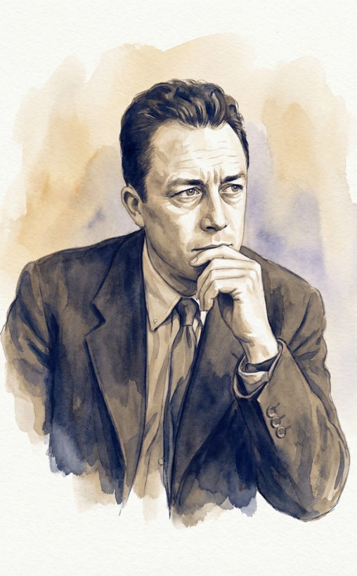
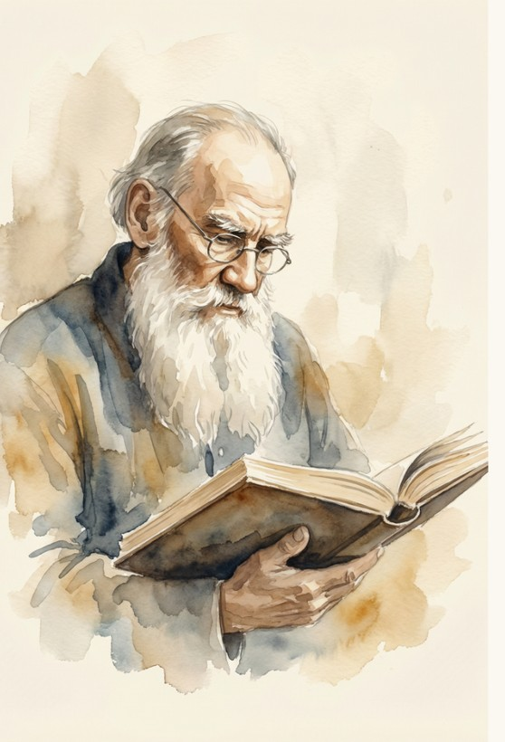
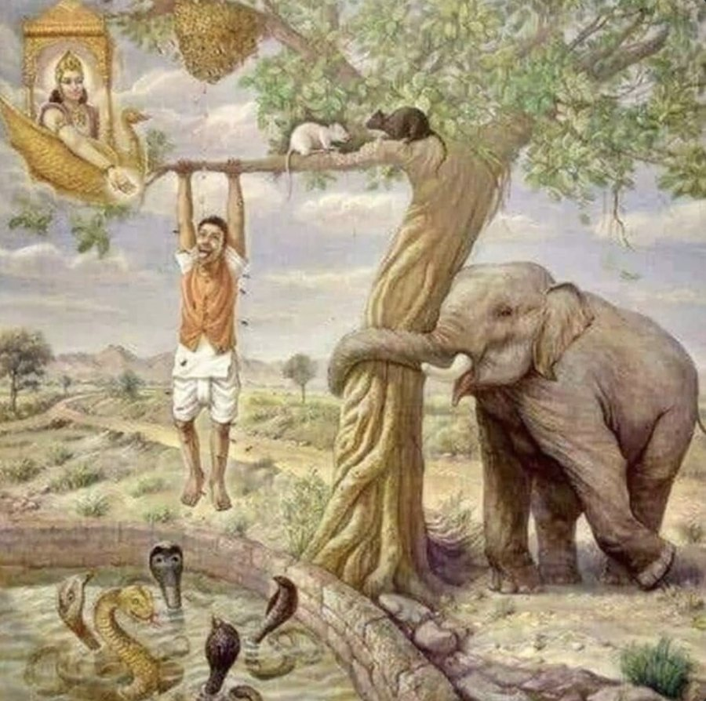
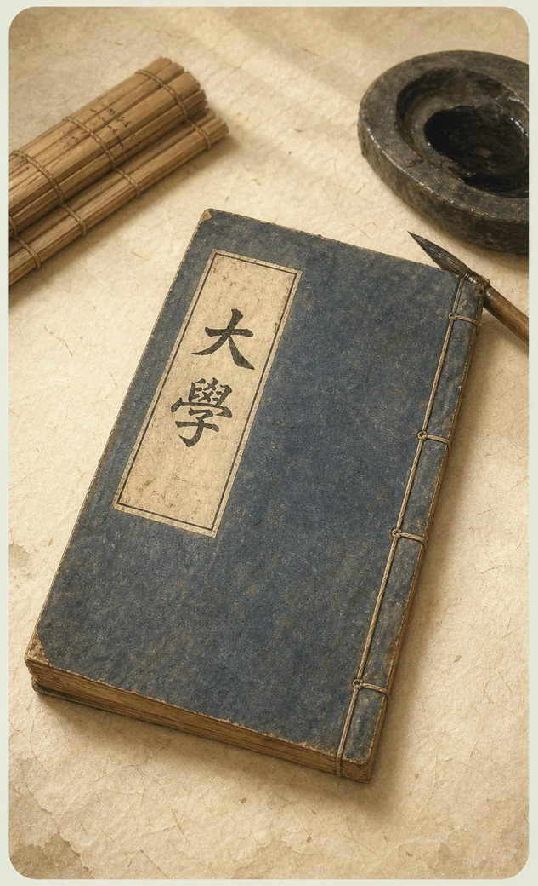
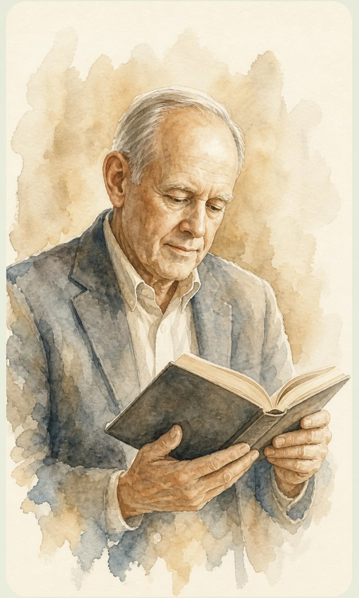

生命的學問
第一週 人生大哉問！
這門課要陪你問什麼？
2026 年 9 月 9 日（三） 14:20–17:20 博雅 406
歡迎你們，來上這門課
人生很不簡單，我們都面對許多困境與辛苦。每個人都會遇到過不去的時候。
那時候，你靠什麼撐過去？
有沒有哪些思想、價值觀或方法，能讓你更有力量、更有勇氣、更有智慧地面對？
你們選了這門課，就代表你們對生命議題是有覺察與渴望的。這不簡單。
我很期待跟你們一起，
開展這一學期的生命旅程。
先聊聊：你為什麼坐在這裡？
正式開始之前，跟旁邊的同學聊三分鐘——
- 你為什麼選這門課？當初看到課名，心裡浮現的是什麼？
- 「生命的學問」聽起來像在講什麼？你猜這門課會問哪些問題？
- 這學期，你希望帶走什麼？
沒有標準答案。先把心裡浮現的第一個念頭說出來就好。
課程基本資訊
請假請事先以 email 告知助教，不必透過 myNTU 系統請假。
這是一門什麼樣的課
「生命的學問」是生命教育的核心理論課程，引導你探討人生最根本的課題——
人從何來？將往何去？又當為何而活？
這些課題並非始於今日，而是「永恆哲學」（philosophia perennis）的雋永關懷， 更是東西方文化共同關注的普遍課題。本課程把「生命的學問」架構為五大核心內涵： 終極關懷、價值思辨、靈性修養、人學探索及思考素養。
這是一門深碗型的紮實理論課，不是營養學分，也不是心靈雞湯。
它需要你投入心力與時間——但所學到的，會是一生都用得上的學問。
十六週的地圖（上）
十六週的地圖（下）
成績怎麼算
課前作業與靈修週記合計 44%。這門課需要你投入心力與時間，
但所有的付出都會是值得的。
這門課的兩份作業
課前作業 6 份
每一份對應一個單元，在上課前先讓你自己想過一輪，帶著自己的答案進教室。
一律於上課前一日（週二）中午 12:00 前上傳 NTU COOL，逾期不予計分。
靈修週記 5 份
書寫期間為 9/9 至 11/24，每份以 1000 字為原則，以電子檔上傳 NTU COOL。
它記的是你自己的實踐：「境界現前」的那個當下，你覺察到什麼、做了什麼、結果如何；再把這次經驗接回靈修六原則來反思。
課程要求
- 全學期須完成 6 份課前作業與 5 份靈修週記，一律於指定日期（該次上課前一日，星期二）中午 12:00 前上傳 NTU COOL，逾期不予計分。
- 靈修週記以電子檔繳交，每份以 1000 字為原則，書寫期間為 9/9 至 11/24。
- 每週點名。缺課三次（含）以上者，成績評定為不通過；遲到 15 分鐘（含）以上，計為 0.5 次缺課。
- 本課程以提問與討論為主要學習方式，請積極參與小組討論、勇於提出問題與想法。
- 指定閱讀請於相關單元上課前讀畢；期末考為申論題，須以課堂所學與閱讀材料為本作答。
- 本學期分六組，課堂討論以小組為單位進行。
指定閱讀
參考書目
五塊拼塊，一張完整的地圖
The Five Core Literacies of Life Education
這門課把「生命的學問」架構為五大核心內涵：終極關懷、價值思辨、靈性修養、人學探索及思考素養。
期待引領同學學習生命教育核心素養的整體架構並深刻體會其內涵，在探索與反思生命的課題上養成見樹又見林的視野。
接下來十六週，我們要把每一個核心素養都打磨成一塊扎扎實實的拼塊，再把它們拼成一幅完整的生命教育拼圖。
今天，我們要做三件事
第一，從這個時代正在發生的事出發，讓那些一直都在、卻很少被停下來問的課題重新變得要緊。
第二，你在課前作業裡已經寫下自己的問題。今天把它帶進小組，也聽聽別人問了什麼。
第三，給你一張整張圖的縮影——古今中外的人怎麼問，生命教育又怎麼問。接下來十六週，我們一格一格把它走完。
今天的六段路
- 壹 從時代挑戰看人生的重大課題
- 貳 我的人生 X 問——你在課前作業中所提出來的問題
- 參 古今中外的人生 X 問
- 肆 生命教育的人生三問
- 伍 從人生三問到五大核心素養
- 陸 靈修六原則與靈修週記
從時代挑戰看人生的重大課題
在這個容易把人活成工具的時代，重新問自己：人，究竟為何而活？
換一個尺度：宇宙中的小藍點
把鏡頭拉到 60 億公里外回望地球——我們所爭奪的一切，只發生在一粒懸浮於陽光中的塵埃上。
Carl Sagan〈小藍點 Pale Blue Dot〉——把「為何而活、彼此珍惜」，拉回生命本身。
「人，不見了」
早在 1970 年代，UNESCO《學會生存》(Learning to Be) 即指出現代教育的「去人化」傾向；學者林治平也沉痛呼籲「人不見了」。
我們從小被教「怎麼變得有用」，卻很少停下來問生命中最根本、最重要的問題。
這學期，我想邀請你懷著好奇心，重新探索這些問題。
人不見了，各種問題當然浮現
缺乏厚度與溫度的人才教育
當教育過度傾斜於學科競爭與人才培育，培養出來的人即使在專業上是頂尖人才，卻往往缺乏人的厚度與溫度，也沒有宏大的理想與終極關懷。他們所在乎的可能只是自身短暫的利益，為了利益甚至可以漠視他人的存在。
社會付出的代價
人生意義的茫然
虛無感蔓延於青年世代
道德觀念的模糊
是非善惡標準失去共識
家庭功能式微
親情聯結逐漸鬆動
政治民粹與意識型態錯亂
理性思辨被情緒對立取代
這些社會現象表面上各自獨立，但追根究底，都與教育在「人的培育」上的缺失息息相關。
失序的校園，與一齣爆紅的韓劇
當「整老師」變成可以彼此傳授的攻略，受傷的不只是老師，而是整個教育體系的崩解。
你們是剛從這個系統走出來的人——你怎麼看？

校園失序、教師求助無門，劇中政府設「教權保護局」以非常手段整頓——爆紅之餘，照見的是真實的教師困境。
三個數字，三記警鐘
三組數字，讓我們看見當下青年世代正在面對的處境。
2024 年 15–24 歲青少年自殺身亡
創近年新高，是該年齡層第 2 大死因。
衛福部「2024 年國人死因統計」青少年過去一週曾浮現自殺想法
其中中度以上者 10.8%——青少女 23.4%、青少男 7.5%。
兒福聯盟「2025 青少年心理健康調查」；n＝7,007曾求助者中，向生成式 AI 傾訴
高於向學校輔導室（41.1%）與校外專業人員（30.4%）。
兒福聯盟「2025 青少年心理健康調查」這些數字不是抽象統計，而是一群正在尋找理解、陪伴與生命方向的年輕人。
時代脈動：黃仁勳——AI 重新定義「能力」
當執行成本趨近於零，定義問題、做出判斷、培養品味，成為人最後的競爭力。
黃仁勳於卡內基美隆大學畢業演說 精華片段（全球大視野）。
可以外包思考，但不能外包「理解」
侯智薰／《商業周刊》2026.05.26；文中引述 OpenAI 共同創辦人 Karpathy
思考變便宜了，理解力反而更值錢——人要指揮更強大的工具。
「程式設計師不會被 AI 取代，但『只會寫程式』的人會。」——侯智薰
我還想追加一問——The only problem to solve is what is the problem to solve.（唯一該解決的問題，就是什麼是應該被解決的問題？）
AI 時代真正稀缺的三項資產——侯智薰的歸納
我的人生 X 問
課前作業① 評分標準
《我的人生 X 問》——總分 100，五個面向
小組分享：人生最重要的 15 件事
課前你們已寫下人生最重要的 15 件事，並與 AI 對話產生新版，同時也得出你們的人生 X 問。
- 請在小組裡分享各自的 15 件事以及人生 X 問
- 組員互相追問：「為什麼這對你重要？」
- 討論後凝聚出你們這一組的人生 X 問
請將小組版的「人生 X 問」透過 QR code 上傳到小組的投稿區。
掃你們那一組的碼，送出小組共識
六組同時進行，各組由一位同學掃碼送出本組共識。
六組的人生 X 問 第 1、2 組
六組的人生 X 問 第 3、4 組
六組的人生 X 問 第 5、6 組
古今中外的人生 X 問
你心裡的那個提問，千百年來，許多偉大的心靈也曾日夜追問。
卡繆的「人生一問」

真正嚴肅的哲學問題只有一個：那就是自殺。
他真正在問的是：身處荒謬之中的人，為什麼不自殺？——「荒謬」正是卡繆思想的核心。
荒謬有兩層意思：
- 一 人向宇宙探問存在的意義，宇宙卻以沉默回答。
- 二 人生本身雖無意義，人生過程中卻有許多值得堅持與實踐的事物——兩者的張力。
卡繆的回應
他既不選擇自殺，也不選擇他所謂「逃避荒謬」的宗教，而是選擇對抗荒謬（révolte）——即使荒謬，也要勇敢地活下去。沙特因此稱他為「頑固的人本主義者」（stubborn humanist）。
卡繆《薛西弗斯的神話》（1942，荒謬論述）、《異鄉人》（1942，同一命題的小說）；「反抗」（révolte）的完整論述見《反抗者》（1951）。
《一路玩到掛》的「人生二問」
電影《一路玩到掛》中，Carter 對 Edward 提出兩個進天堂的條件。
一生是否都過得快樂？
- 什麼是快樂？
- 快樂有表面、感官、短暫的
- 也有深層、精神、長期的
- 快樂真的那麼重要嗎？
- 若過得快樂卻沒有意義呢？
一生是否都帶給旁邊的人快樂？
- 要如何帶給別人快樂？
- 若不講究方法，會不會弄巧成拙？
- 反而帶給自己與他人痛苦？
康德的「人生三問」

康德三大批判的深奧論述背後，核心問題可歸結為三：
我能知道什麼？
What can I know?
知識的界限——哪些客觀真實，哪些只是主觀認知。
我應該做什麼？
What ought I to do?
道德準則——「無上命令」：出於對法則本身的純粹敬重。
我可以期待什麼？
What may I hope?
盡了道德義務，可否期待超越現世的回報？須「預設」上帝與靈魂不朽。
三問終歸結到一個更根本的提問——「人是什麼？」（What is man?）
托爾斯泰的「人生三問」

托爾斯泰晚年經歷深刻的精神危機。在短篇小說《三個問題》中，他透過一位國王尋找人生答案的故事，提出三個關乎實踐智慧的提問：
最重要的時間？
答案：「現在」。只有在現在，我們才對自己擁有掌控權。
最重要的人？
答案：「現在與你在一起的人」。誰是你最需要關注的對象？
最重要的事？
答案：「為現在與你在一起的人做好事」。因為這正是人來到世界上的唯一目的。
托爾斯泰這個版本的「人生三問」側重的是日常生活中的實踐與抉擇，但似乎忽略了他在《懺悔錄》當中對於人生無常與意義的終極反思——請參考下一頁。
托爾斯泰的「井中人」寓言

一名旅人被猛獸追逐，逃入一口枯井，卻見井底盤據著一條張口欲吞噬他的巨龍——上不能逃（猛獸），下不敢跳（巨龍）。
他攀住井壁縫隙裡長出的一根樹枝，卻見一黑一白兩隻老鼠正不停繞著枝幹啃咬——牠們代表日與夜，一點一滴啃噬著生命。
樹枝葉上有幾滴蜂蜜，他伸出舌頭去舔，嚐到生命殘存的甜蜜——但蜂蜜仍讓人感到甜美嗎？
托爾斯泰在《懺悔錄》中說：他也像這旅人一樣緊抓生命的樹枝，明知死亡之龍必然等在下方；他也曾試著舔那蜂蜜——但蜂蜜，已不再讓他感到甜美。
高更的「人生三問」

高更於 1897 年在大溪地完成近四公尺巨幅油畫——《我們從何處來？我們是誰？我們向何處去？》（D'où venons-nous? Que sommes-nous? Où allons-nous?）

我們從何處來？
D'où venons-nous?
畫右：沉睡的嬰兒與年輕女性，象徵生命的誕生與純真。
我們是誰？
Que sommes-nous?
畫中：採摘果實的雌雄莫辨人物，象徵壯年的勞動與追求。
我們向何處去？
Où allons-nous?
畫左：形容枯槁的老婦人，象徵衰老與死亡的臨近。
高更從近乎神學人學的高度，追問了存在的起源、本質與歸宿；但這幅作品缺乏實踐的關懷，更多反映的是他個人的絕望與困惑。
你們的人生 X 問，比較像哪一位？
卡繆的一問、《一路玩到掛》的二問、康德／托爾斯泰／高更的三問——都看過了。現在回到你們自己收斂出來的那一句。
- 這些經典的提問裡，哪一個最打動你們？哪一個最不足？
- 你們的「人生 X 問」比較接近哪一種模式——一問、二問，還是三問？為什麼？
各版本有優點，亦有限制
卡繆 · 一問
為何不自殺？——把「活下去的理由」逼到眼前，但止於「要不要活」，未及「該怎麼活」與「如何活出」。
一路玩到掛 · 二問
快樂與利他——溫暖，但似乎仍不足以涵蓋人生所有最重要的課題：停在感受的層次，缺了意義的縱深。
康德／托爾斯泰／高更 · 三問
指向「人是什麼」「此刻利他」「從何處來往何處去」——深刻，但都缺乏知行合一的探究。
生命教育的人生三問
為何而活、如何生活、如何活出——三個問題，撐起完整的人生。
以終為始：先確立終極目標

大學之道，在明明德，在親民，在止於至善。知止而後有定，定而後能靜，靜而後能安，安而後能慮，慮而後能得。物有本末，事有終始，知所先後，則近道矣。
以「止於至善」為終極目標——知道要止於何處（終極關懷），心才能定、靜、安、慮、得。注意「近道」這兩個字！近道不等於得道。

「以終為始」（Begin with the End in Mind）——做任何事，先在心中清楚描繪最終的目標與藍圖，再據以規劃與行動。
出自《與成功有約》第二個習慣。人生亦然：先確立「為何而活」，才能據以選擇「如何生活」與「如何活出」。
開車先輸入目的地，導航才算得出路線——我們有沒有為人生，輸入過一個目的地？
兩支短片：方向，比速度更重要
〈方向比速度重要〉——跑錯方向，再快也到不了（22 秒短片）。
〈聚焦目標就是武器〉——流傳的「25/5 法則」：先寫下 25 個目標，只專注最重要的 5 個（好葉動畫，4:40）。此說出自網路流傳的故事，巴菲特本人從未證實。
生命教育的人生三問：以工作專案類比
任何專案都要回答三個問題——目標、方法、資源與執行力。人生亦然。
人應為何而活？
→ 終極關懷（ultimate concern）
要去哪裡
人應如何生活？
→ 價值思辨（value deliberation）
走哪條路
如何活出該活的生命？
→ 靈性修養（spiritual cultivation）
車有沒有油、你會不會開
人生三問的邏輯體系
三個問題環環相扣，缺一不可，共同引領人們踏上探索生命、實踐生命、圓滿生命的旅程。
第一問 終極關懷
確立人生的方向與目標
提供價值思辨的準則與框架
第二問 價值思辨
確立人生應行的道路
建構實踐的價值信念體系
第三問 靈性修養
賦予實踐的內在動力
達到知行合一以圓滿終極理想
人格愈統整、靈性愈清明 → 對生命實相愈能究竟了悟 → 強化價值思辨與知行合一 → 復又增進人格統整……
週而復始、綿綿不已，引領人生向上超升，進入止於至善的正向循環。
從人生三問到五大核心素養
三個問題，慢慢長成五個面向——一張屬於你的生命地圖。
為什麼，要擴成五個？
人學探索
要回答三問，得先回答「人是什麼」——這是一切的基礎。
思考素養
用什麼方法想這些問題？批判、論證、後設思考。
三問（終極關懷·價值思辨·靈性修養）＋ 基礎（人學探索）＋ 方法（思考素養）＝ 五大核心素養
五大核心素養關係圖
終極關懷、價值思辨、靈性修養——為何而活、如何生活、如何活出。
人是什麼、我是什麼——三問要問得下去，得先有人的圖像。
思考的知識、技能與態度——用什麼方式把三問想清楚。
靈修六原則與
靈修週記
這門課有一條貫穿整學期的實踐線。
每個人的自我，都有兩個層面
外在自我
追隨著生活中不同階段裡的大小目標，非常務實而且目標導向。
內在自我
凝視著人生整體的意義與價值，是在生活中能省思並探索「人生三問」的那個靈性自我。
遺憾的是，大部分人在每天起床之後，只有外在自我醒過來並開始活動，內在自我卻不一定跟著甦醒起來，有一些人的內在自我甚至從來都沒有清醒過，一輩子都隨著各種階段性的目標而盲目打轉。
靈修六原則
民國 96 年第二期高中生命教育師培期間，與跨宗教及跨文化的導師們一起討論出來的六個修養原則。
- 一、在每一個人身上看見神、看見佛、看見人。
- 二、第一個去愛、第一個去給。
- 三、給人信心、給人歡喜、給人希望、給人方便。
- 四、緩於發怒、敏於寬恕、勇於道歉、時時感恩。
- 五、擇善固執、不變隨緣。
- 六、誠意正心、戒慎恐懼。
根源各異，卻適合每一個人
- 神、佛、人三個語彙跨東西方，目的是讓人以自己熟悉的方式，肯定人的尊貴與神聖。
- 第一個去愛、第一個去給源自天主教普世博愛運動的「愛的藝術」。
- 給人信心、歡喜、希望、方便來自佛光山，是佛光人的工作信條——重點在一個「給」字。
- 緩於發怒源自聖經；敏於寬恕、勇於道歉則是人類智慧的共產。
- 擇善固執出自《中庸》，不變隨緣本於《大乘起信論》，語出法藏《大乘起信論義記》。
- 誠意正心源自《大學》，戒慎恐懼出於《中庸》。
你有沒有宗教信仰都不影響——這些原則的價值是超越宗教的，任何人都可以依自己習慣的方式操持它們。
怎麼做：早課、晚課，與白天的真功夫
把內在自我叫醒
早上悠悠醒轉之際，先把六原則在心中默念幾遍，一邊念一邊想它的意思，立下今天要貫徹它們的決心，再開始一天。
早課的意義，是讓內在自我成為一天的羅盤。
總結與再出發
睡前給自己一段放空、冥想的時間，回顧這一天：哪裡做到了、哪裡沒有。
讓過去埋葬過去，以現在的感恩與懺悔，重建對未來的信心與希望。
真正的功夫在這裡
在那些讓你不舒服、想發脾氣、想逃避、想妥協的每一個當下——那就是「境界現前」。
修養功夫要在行住坐臥的起心動念之間進行。
週記怎麼寫
五份週記沒有規定的題目，由你自己決定；但期許一整個學期寫下來，盡量關注到生活經驗與每一個原則的關係。
這兩週裡，有哪一次「境界現前」——某個讓你動念、動氣、猶豫、或事後後悔的時刻？依四步驟寫：
- ① 當時發生什麼事（具體到像在寫劇本）
- ② 我當下的念頭與情緒（不用美化，如實寫）
- ③ 我做了什麼、或沒做什麼
- ④ 事後回頭看，我學到什麼？下次想怎麼做？
這次的境界現前跟哪一條（或哪幾條）有關？做到了沒有？下次它可以怎麼幫你？
- 一 看見神、看見佛、看見人
- 二 第一個去愛、第一個去給
- 三 給人信心、歡喜、希望、方便
- 四 緩於發怒、敏於寬恕、勇於道歉、時時感恩
- 五 擇善固執、不變隨緣
- 六 誠意正心、戒慎恐懼
只有一條紅線
靈修週記一律不得借助 AI，
包含潤稿。
靈性的反思，無人能代你完成。
AI 可以幫你想，但不能幫你活。
〈靈修六原則〉全文你們在課前作業已讀過一遍；每次動筆寫週記之前，請再讀一次，溫故而知新。
五份截止：9/22、10/6、10/20、11/10、11/24。每份 1000 字為原則，上傳 NTU COOL。
今天，我們打開了
一張生命的地圖
這一週，不是讓你又學會什麼，
而是讓你重新有了探索生命的熱情，
並看見：生命教育的人生三問與五大核心素養，其實彼此相連。
——生命的學問，從這裡開始
下週見：課前作業②
W2（9/16）我們談思考素養——是什麼左右了我們的判斷？
觀賞電影《十二怒漢》（12 Angry Men, 1957），並回答：
哪些因素影響了陪審員的判斷？他們有哪些盲點？哪些表現值得學習？
另外：靈修週記①於 9/22（二）12:00 前繳交——但從今天就可以開始實踐、反思與書寫。
彩蛋·主題曲〈三問〉
〔主歌〕
天還沒亮 我就開始往前走
從沒問過 這條路通向哪個盡頭
有人問我 你要去哪裡
我才驚覺 我從沒問過 為什麼
〔導歌〕
高更在畫布角落 顫抖地寫下
我們從何處來 我們是誰 又將往哪裡去
有人說 以終為始——先看見遠方那盞燈
於是我學著 把終點 放進每一個起點
〔副歌〕
為何而活 為何而活
在每個天微亮的清晨 輕輕問自己
該怎麼活 該怎麼活
在每個十字路口 誠實地選一條路
如何活出 如何活出
讓我說過的話 和我走過的路 慢慢合而為一
〔尾聲｜漸弱〕
為何活……該怎麼活……如何活出……
這，就是我的人生三問